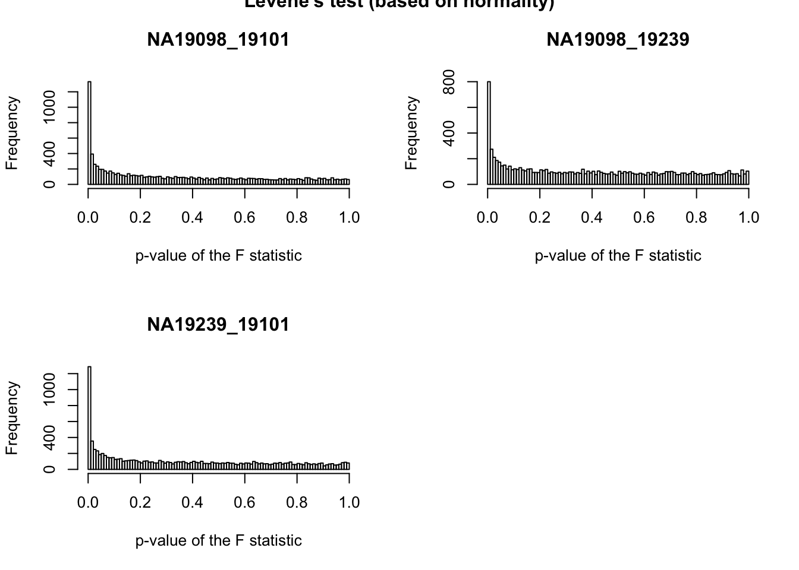
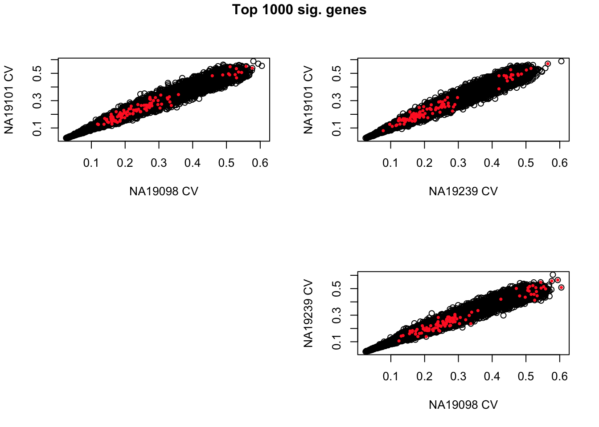
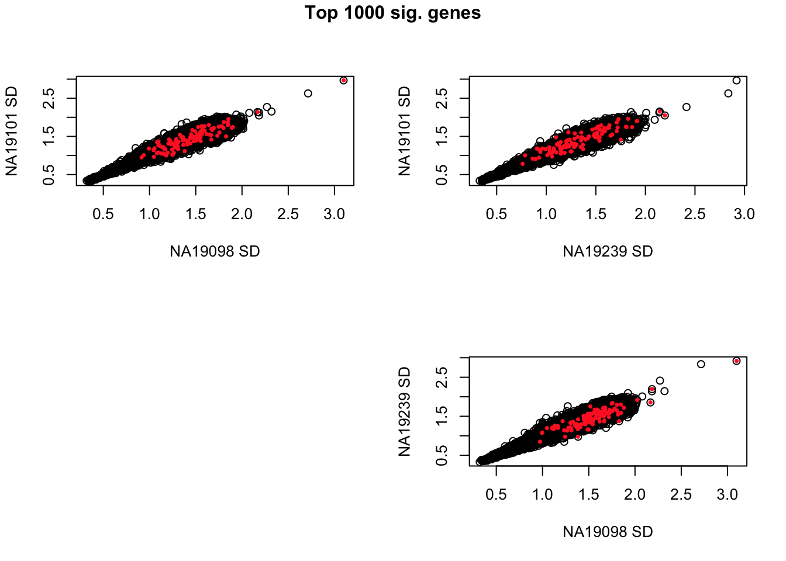

Last updated: 2015-10-07
Code version: 5b866c4e43bd9168cd3f4f4621d63daa0d527c49
library("data.table")
library("dplyr")
library("limma")
library("edgeR")
library("ggplot2")
library("grid")
theme_set(theme_bw(base_size = 12))
source("functions.R")Input annotation of only QC-filtered single cells
anno_qc <- read.table("../data/annotation-filter.txt", header = TRUE,
stringsAsFactors = FALSE)
head(anno_qc) individual replicate well batch sample_id
1 NA19098 r1 A01 NA19098.r1 NA19098.r1.A01
2 NA19098 r1 A02 NA19098.r1 NA19098.r1.A02
3 NA19098 r1 A04 NA19098.r1 NA19098.r1.A04
4 NA19098 r1 A05 NA19098.r1 NA19098.r1.A05
5 NA19098 r1 A06 NA19098.r1 NA19098.r1.A06
6 NA19098 r1 A07 NA19098.r1 NA19098.r1.A07Input molecule counts that are filtered, transformed, and also processed to remove unwanted variation from batch effet. ERCC genes are also removed.
molecules_qc <- read.table("../data/molecules-final.txt", header = TRUE, stringsAsFactors = FALSE)Compute per batch coefficient of variation.
Include only genes with positive coefficient of variation. Some genes in this data may have zero coefficient of variation, because we include gene with more than 0 count across all cells.
molecules_cv_batch <-
lapply(1:length(unique(anno_qc$batch)), function(per_batch) {
molecules_per_batch <- molecules_qc[ , unique(anno_qc$batch) == unique(anno_qc$batch)[per_batch] ]
mean_per_gene <- apply(molecules_per_batch, 1, mean, na.rm = TRUE)
sd_per_gene <- apply(molecules_per_batch, 1, sd, na.rm = TRUE)
cv_per_gene <- data.frame(mean = mean_per_gene,
sd = sd_per_gene,
cv = sd_per_gene/mean_per_gene)
rownames(cv_per_gene) <- rownames(molecules_qc)
cv_per_gene <- cv_per_gene[rowSums(is.na(cv_per_gene)) == 0, ]
cv_per_gene$batch <- unique(anno_qc$batch)[per_batch]
return(cv_per_gene)
})
names(molecules_cv_batch) <- unique(anno_qc$batch)
dim(molecules_cv_batch[[1]])[1] 10483 4individual <- anno_qc$individual
var_Ftest <-
lapply(1:dim(molecules_qc)[1], function(per_gene) {
values <- unlist(molecules_qc[per_gene, ])
data.frame(NA19098_19101 = var.test(values[individual == "NA19098"],
values[individual == "NA19101"])$p.value,
NA19098_19239 = var.test(values[individual == "NA19098"],
values[individual == "NA19239"])$p.value,
NA19239_19101 = var.test(values[individual == "NA19239"],
values[individual == "NA19101"])$p.value )
})
var_Ftest <- do.call(rbind, var_Ftest)
head(var_Ftest) NA19098_19101 NA19098_19239 NA19239_19101
1 0.07262633 0.7315380 0.10590951
2 0.02339206 0.6334312 0.04544282
3 0.00626534 0.2016069 0.09632003
4 0.04688932 0.1287598 0.57324644
5 0.80819090 0.9066362 0.69543482
6 0.43096883 0.7309528 0.21753654p-value distribution
par(mfrow = c(2,2))
hist(var_Ftest[ ,1], main = colnames(var_Ftest)[1],
breaks = 100, xlab = "p-value of the F statistic")
hist(var_Ftest[ ,2], main = colnames(var_Ftest)[2],
breaks = 100, xlab = "p-value of the F statistic")
hist(var_Ftest[ ,3], main = colnames(var_Ftest)[3],
breaks = 100, xlab = "p-value of the F statistic")
title(main = "Levene's test (based on normality)", outer = TRUE)
Compute individual CVs by taking the average of batch CVs.
molecules_cv_indiviudal <-
data.frame(NA19098 = rowMeans(cbind(molecules_cv_batch[[1]]$cv,
molecules_cv_batch[[2]]$cv,
molecules_cv_batch[[3]]$cv) ),
NA19101 = rowMeans(cbind(molecules_cv_batch[[4]]$cv,
molecules_cv_batch[[5]]$cv,
molecules_cv_batch[[6]]$cv) ),
NA19239 = rowMeans(cbind(molecules_cv_batch[[7]]$cv,
molecules_cv_batch[[8]]$cv,
molecules_cv_batch[[9]]$cv) ) )Plot CVs.
require(scales)Loading required package: scalesrequire(broman)Loading required package: bromancrayons <- brocolors("crayons")
par(mfrow = c(2,2))
df_xy <- data.frame(x = molecules_cv_indiviudal$NA19098,
y = molecules_cv_indiviudal$NA19101)
plot(df_xy,
xlab = "NA19098 CV", ylab = "NA19101 CV", pch = 1)
select_pts <- var_Ftest$NA19098_19101 < quantile(var_Ftest$NA19098_19101, prob = .01)
points(df_xy[ select_pts, ], cex = .6,
pch = 16, col = alpha(crayons["Orange Red"], 1) )
df_xy <- data.frame(x = molecules_cv_indiviudal$NA19239,
y = molecules_cv_indiviudal$NA19101)
plot(df_xy,
xlab = "NA19239 CV", ylab = "NA19101 CV", pch = 1)
select_pts <- var_Ftest$NA19239_19101 < quantile(var_Ftest$NA19239_19101, prob = .01)
points(df_xy[ select_pts, ], cex = .6,
pch = 16, col = alpha(crayons["Orange Red"], 1) )
plot(0, axes = F, ann = F, pch = "")
df_xy <- data.frame(x = molecules_cv_indiviudal$NA19098,
y = molecules_cv_indiviudal$NA19239)
plot(df_xy,
xlab = "NA19098 CV", ylab = "NA19239 CV", pch = 1)
select_pts <- var_Ftest$NA19098_19239 < quantile(var_Ftest$NA19098_19239, prob = .01)
points(df_xy[ select_pts, ], cex = .6,
pch = 16, col = alpha(crayons["Orange Red"], 1) )
title(main = "Top 1000 sig. genes", outer = TRUE, line = -1)
Compute individual SDs by taking the average of batch SDs.
molecules_sd_indiviudal <-
data.frame(NA19098 = rowMeans(cbind(molecules_cv_batch[[1]]$sd,
molecules_cv_batch[[2]]$sd,
molecules_cv_batch[[3]]$sd) ),
NA19101 = rowMeans(cbind(molecules_cv_batch[[4]]$sd,
molecules_cv_batch[[5]]$sd,
molecules_cv_batch[[6]]$sd) ),
NA19239 = rowMeans(cbind(molecules_cv_batch[[7]]$sd,
molecules_cv_batch[[8]]$sd,
molecules_cv_batch[[9]]$sd) ) )Plot standard deviations.
require(scales)
require(broman)
crayons <- brocolors("crayons")
par(mfrow = c(2,2))
df_xy <- data.frame(x = molecules_sd_indiviudal$NA19098,
y = molecules_sd_indiviudal$NA19101)
plot(df_xy,
xlab = "NA19098 SD", ylab = "NA19101 SD", pch = 1)
select_pts <- var_Ftest$NA19098_19101 < quantile(var_Ftest$NA19098_19101, prob = .01)
points(df_xy[ select_pts, ], cex = .6,
pch = 16, col = alpha(crayons["Orange Red"], 1) )
df_xy <- data.frame(x = molecules_sd_indiviudal$NA19239,
y = molecules_sd_indiviudal$NA19101)
plot(df_xy,
xlab = "NA19239 SD", ylab = "NA19101 SD", pch = 1)
select_pts <- var_Ftest$NA19239_19101 < quantile(var_Ftest$NA19239_19101, prob = .01)
points(df_xy[ select_pts, ], cex = .6,
pch = 16, col = alpha(crayons["Orange Red"], 1) )
plot(0, axes = F, ann = F, pch = "")
df_xy <- data.frame(x = molecules_sd_indiviudal$NA19098,
y = molecules_sd_indiviudal$NA19239)
plot(df_xy,
xlab = "NA19098 SD", ylab = "NA19239 SD", pch = 1)
select_pts <- var_Ftest$NA19098_19239 < quantile(var_Ftest$NA19098_19239, prob = .01)
points(df_xy[ select_pts, ], cex = .6,
pch = 16, col = alpha(crayons["Orange Red"], 1) )
title(main = "Top 1000 sig. genes", outer = TRUE, line = -1)
sessionInfo()R version 3.2.0 (2015-04-16)
Platform: x86_64-unknown-linux-gnu (64-bit)
locale:
[1] LC_CTYPE=en_US.UTF-8 LC_NUMERIC=C
[3] LC_TIME=en_US.UTF-8 LC_COLLATE=en_US.UTF-8
[5] LC_MONETARY=en_US.UTF-8 LC_MESSAGES=en_US.UTF-8
[7] LC_PAPER=en_US.UTF-8 LC_NAME=C
[9] LC_ADDRESS=C LC_TELEPHONE=C
[11] LC_MEASUREMENT=en_US.UTF-8 LC_IDENTIFICATION=C
attached base packages:
[1] grid stats graphics grDevices utils datasets methods
[8] base
other attached packages:
[1] broman_0.59-5 scales_0.2.4 ggplot2_1.0.1 edgeR_3.10.2
[5] limma_3.24.9 dplyr_0.4.2 data.table_1.9.4 knitr_1.10.5
loaded via a namespace (and not attached):
[1] Rcpp_0.12.0 magrittr_1.5 MASS_7.3-40 munsell_0.4.2
[5] colorspace_1.2-6 R6_2.1.1 stringr_1.0.0 httr_0.6.1
[9] plyr_1.8.3 tools_3.2.0 parallel_3.2.0 gtable_0.1.2
[13] DBI_0.3.1 htmltools_0.2.6 yaml_2.1.13 digest_0.6.8
[17] assertthat_0.1 reshape2_1.4.1 formatR_1.2 bitops_1.0-6
[21] RCurl_1.95-4.6 evaluate_0.7 rmarkdown_0.6.1 stringi_0.4-1
[25] chron_2.3-45 proto_0.3-10